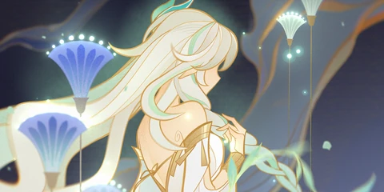

Sumeru · Quest Chronicles
King Deshret and the Three Magi
Act IV of Sumeru’s Archon Quest exposes the Akademiya’s secret Divine Knowledge project, its false rumor about King Deshret’s return, and its plan to create a new god.

The missing Village Keepers
Chapter III, Act IV opens in Aaru Village, where the Traveler joins Cyno, Dehya, Candace, and Alhaitham in searching for missing Village Keepers. Their trail leads from the village to an abandoned hospital and a hidden operation involving the Akademiya.
The act treats the Village Keepers as people, not just a mystery: Isak is looking for his grandfather, and the investigation uncovers how the missing scholars were being used.
A false rumor turns neighbors against each other
A group of desert radicals is persuaded to help the Akademiya by a masked man claiming to be King Deshret’s envoy. The sages had circulated a story that Deshret would be resurrected; the investigation identifies it as deliberate misinformation used to manipulate the radicals and gain access to the Village Keepers.
This is a political tactic, not a supernatural event. Act IV gives the desert characters different motives and relationships instead of treating all followers of King Deshret as one unified faction.
Divine Canned Knowledge
Alhaitham’s investigation finds that the Akademiya was extracting knowledge from people’s minds and storing it in Canned Knowledge. The act connects its special Divine Canned Knowledge to scholars who had encountered a divine consciousness and became mentally ill; the process was dangerous and left people suffering.
Alhaitham condemns the practice as a violation of the boundaries of scholarship. He helps investigate because the capsule and its contents interest him, and because he wants to correct what he sees as a misuse of knowledge.
The sages’ plan to create a god
The missing scholars are part of the sages’ larger project. A witness explains that the Akademiya built a divine vessel based on a humanoid puppet, used the Gnosis to make a divine core, and sought Divine Canned Knowledge to supply the new god with wisdom. The intended vessel is the Balladeer, with the Fatui Harbinger Dottore assisting the sages.
The plan has little to do with reviving King Deshret. The sages want a god they can control after rejecting Nahida as unfit to replace Rukkhadevata.
An act that ends with the project exposed
The Traveler and allies uncover the operation and its intended result, but Act IV is the reveal and setup, not the project’s defeat. The direct confrontation continues in Chapter III, Act V, Akasha Pulses, the Kalpa Flame Rises.
Keep the quest’s false resurrection rumor separate from King Deshret’s actual history. Later world quests and the newer Aaru story add other evidence about the king, but those are separate source records rather than events depicted in this act.
This is an original CoreGG reading guide, not an official HoYoverse article or a reproduction of the game text. Source links below identify the records used so you can check the original context.
Sources & references
Check these sources for the original game text and reference trail.